docs/threads/part-1/1-understanding.md
认知篇
本篇从认知层面，聊聊在开始系统学英语之前，应该先想清楚的一些问题。
本章速览（TL;DR）
- 搞清：为什么要学英语、到底想要什么，明确学习目标。
- 意识到：被动输入（看、听）远不够，需要更多“动手、开口、输出”。
- 学会给自己设定 合理场景和节奏，而不是靠透支睡眠、透支身体。
- 学会理解并温柔对待自己的情绪，而不是只用鸡血和内疚驱动。
- 给自己搭建一个安全、沉浸的英语环境，像刷牙一样自然。
如果你现在对“学英语”充满内疚、焦虑、拖延，本章会帮你把这些情绪放回合适的位置。
为什么我们应该学好英语
首先我们应该明白，英语是一门使用极其广泛的语言。这一点可以从维基百科的内容语言分布窥见一二：
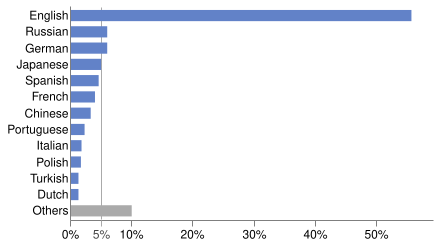
英语作为全球使用范围最广的语言，几乎涵盖了人生活的方方面面。
- 无论是简单的信息交流，还是严谨的书籍、论文，英语都占了相当大的比例。
- 学好英语，就像是打开了一扇通往新世界的门，不再被原有信息渠道所限制，能看到比中文世界更广阔、更丰富的内容。
如果你是互联网从业者，对英语的要求会更高：
- 新技术、新框架、新理念，第一时间往往以英文形式出现。
- 很多不恰当的翻译，会误导我们对技术或概念的理解。
- 但也正因为我们身处这个领域，更容易接触到优秀工具，让英语学习变得更高效、更有趣。
换句话说，学好英语，不只是为了考试，而是为了连接一个更大的世界。
学习金字塔：为什么要“动起来”
美国学者艾德格·戴尔（Edgar Dale）在 1969 年提出过一个著名的“学习金字塔”理论（The Cone of Learning）。理论大意是：在初次学习两个星期后，大脑大约能保留的信息比例大致如下：
- 只通过阅读，记住约 10%
- 只通过听讲，约 20%
- 看图片，约 30%
- 看影像、示范，约 50%
- 参与讨论、提问、发言，约 70%
- 做报告、教学、模拟体验、实际操作，约 90%
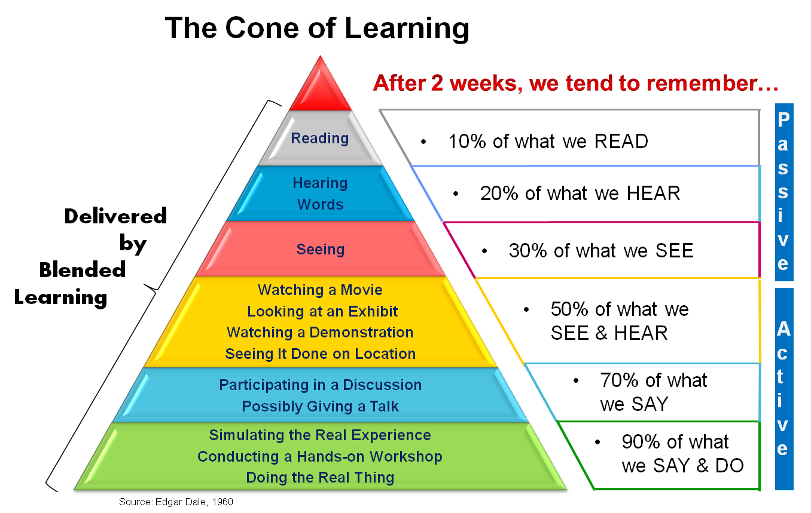
这个理论在学界其实存在不少争议，数字未必精准，但它强调的一个大方向是对的：
被动输入（看、听）远没有主动参与（说、写、讲、用）有效。
对于语言学习来说尤为明显：
- 仅仅依靠“读”和“听”，理解往往停留在表层；
- 真正记得住、用得出，是因为你查过词、做过笔记、写过句子、说出口。
所以，本指南会不断提醒你：尽早开始主动输出，不要只停留在看和听。
一个“用力过猛”的失败经历
我们几乎都经历过应试教育的阶段：魔鬼训练、寒窗苦读、起早贪黑。小有成就时志得意满，考砸了就陷入自责和焦虑，甚至有人觉得：学习本来就应该很痛苦。
高中时，我在一个学习压力极大的环境中：
- 舍友们中考分别是全县第一（特招生，学校免掉所有费用，每学期额外 5000 奖学金）、全县第二和全县第八；
- 全县第一和第二都属于“天才型”，戴着小眼镜，总是一脸好奇，看起来像小学五年级学生；
- 为了激励自己，我主动找班主任调换座位，让全县第一和我同桌，第二坐在我前面一排。
那段时间，我的状态大概是这样的：
- 每天早上 5:20 起床，到操场开始背诵；
- 午自习留在教室“学习”，快上课时眯一会；
- 晚饭总是第一个冲出食堂，用百米冲刺的速度回教室占座学习；
- 晚自习回宿舍，匆忙洗漱后上床看书，宿舍灯关了就悄悄打开小台灯继续学。
我以为自己在“争分夺秒”，实际却是屡战屡败。我不断调整心态，愈挫愈勇，但成绩却一路下滑，有一次年级排名掉到 500 多名，几乎绝望。
我不明白——我明明这么努力，为什么成绩反而更差？
反观我的同桌，把刚拿到的奖学金拿去买了笔记本电脑，上课偷偷看美剧，成绩却总是稳定第一。
WHY?
WHY?
WHY?
后来我才慢慢看清楚：我犯了一连串非常典型的错误。
学习的根本动机：你到底是为了什么在学？
先问自己几个问题：
- 我为什么要努力学习？
- 只是为了考试拿高分吗？
- 拿到好排名之后，是不是反而更焦虑、怕失去？
- 从更长远来看，我希望自己的生活变成什么样？
如果学习这件事本来是为了让生活变得更美好，那当你用极其痛苦的方式去学习时，其实已经有点本末倒置了。
很多时候，只是换一个心态和节奏：
- 轻松一些去学，生活的幸福感反而会提升；
- 不再把自己钉在“必须努力”的十字架上，也更容易坚持。
只有先了解自己、接纳自己、爱惜自己，才能更好地投入到真正喜欢的事情中，才能在其中尽情玩耍，挥洒汗水，品尝收获。
这是一个 学渣 跟我说的道理。
她总喜欢戴着耳机听音乐，一脸温暖地笑着——这在学校其实是不被允许的。
她的一番话，让我释怀，让我不再靠打鸡血逼自己奋斗，开始接受自己的平凡，去感受生活本身的美好。小练习：写给自己的三个问题
- 如果不考虑考试与排名，我现在最想通过英语“多获得”什么？
- 五年后的理想生活里，英语扮演什么角色？
- 有哪一种学习方式，是我真心享受的？
明确场景：先搞清楚你要“用在哪儿”
学习英语之前，先把自己的需求拆清楚。不同场景，对学习重点完全不同。
- 应试类：高考、四六级、考研、专八
关注：题型、分数线、做题策略、应试技巧。 - 留学类：托福、雅思、GRE、日常交流
关注：听说读写均衡、学术写作、演讲和课堂参与。 - 非应试类：职场、技术、旅游、自我提升
关注：行业词汇、邮件与文档、会议沟通、真实表达。
简单写下来：
我的首要场景是：________
我最迫切要提升的是：听 / 说 / 读 / 写 / 考试（选 1–2 个即可）
之后的所有选择（教材、练习、投入时间）都围绕这个主场景展开，会轻松很多。
早起毁一天：别用透支换“努力感”
为了挤出那半小时早起背书，我付出的代价是：
- 上午上课总打盹，课堂效率大幅降低；
- 晚上 12:30–1:00 才睡，早上五点多就爬起来，身体严重缺乏休息；
- 所有“能挤出来的时间”都被我挤干了，最后只能从课堂上偷回来。
结果就是：
- 课堂上既不能全力听课，也不能美美地睡一觉；
- 看起来非常“拼”，实际学习效果大打折扣。
不要透支原本应该用来睡觉的时间。
不然，你不仅当不了“伟人”，反而容易变成“萎人”。
那时候我和同桌还有一个共同爱好：讨论优秀作文。
我们凑钱买了一个能看 .txt 的小 mp3——是的，就是 mp3。每晚轮流由一个人朗读一篇作文，读着读着就睡着了。
我们总是意犹未尽，在讨论中进入睡眠。这样的学习，既有乐趣，又不透支身体，效果反而更好。
不自量力：别盲目和“不同段位的人”对标
除了学习习惯的差距，更现实的是：人和人之间确实存在学习能力、基础和节奏的差异。
- 盲目把一个“顶级学霸”当作目标，给自己安排过重任务，很容易每天都在疲惫和自责里挣扎；
- 过高、模糊的目标，带来的往往是自信心不断被击穿，开始怀疑自己。
Don't push yourself too hard!
“人生有三次成长：
一是发现自己不再是世界的中心的时候；
二是发现再怎么努力也无能为力的时候；
三是接受自己的平凡并去享受平凡的时候。” —— 周国平
你需要的是“适合当前自己的目标”，而不是别人眼中的理想目标。
并不享受所做的事情
那段时间，我本质上是在为了“读书而读书”，为了“排名而学习”：
- 排名上升时，有短暂的快乐；
- 排名下降时，立刻掉进恐惧、自责和焦虑里。
这种学习方式几乎没有任何乐趣可言，也很难持久。
相反，很多高效的学习，反而出现在兴趣驱动、不刻意的时刻：
- 拿起一本好书，初读几章，被优美的语言吸引，不知不觉一口气读完；
- 看别人弹尤克里里觉得很酷，搜教程、跟着练，过一阵子自己也能哼哼唱唱弹上几曲。
Enjoy what you are doing！
如果你能把英语学习和真正感兴趣的东西绑在一起，比如：
喜欢美剧就用原声 + 中文字幕过一遍，再用英文字幕重看；
喜欢技术就读英文文档和 Issue；
喜欢八卦就刷英文论坛……
学习的过程会轻松很多。
没有合理的学习计划
学习是非常讲究策略的，时间分配也绝不是越平均越好。
那时的我有几个明显问题：
- 没有认真分析自己的薄弱环节，无法做到“有的放矢”；
- 对于难以理解的知识点，没有主动去讨论、请教和交流；
- 每天安排大量机械时间，却没有留出“总结、复习、迁移”的空间。
更合理的做法是：
- 先找到自己的薄弱环节（比如听力、词汇量、写作），集中火力突破一两个；
- 坚持“输出驱动”：学到的东西要写、要说、要用，哪怕很简单；
- 定期回顾：每周花一点时间回看自己学了什么、真正留下了什么。
在我调整了学习方法之后，不再给自己施加巨大的压力，
实际学习时间看似减少了（但有效时间增加了），成绩反而上升了。
认识自己的情绪：谁在支配你“不想学”？
学一项技能时，你可能会有这样的经验：
有时候效率奇高、有如神助；
有时候完全不在状态，只想刷手机或打游戏。
当你觉得“就是不想学”的时候，到底是谁在控制你的行为？
很多时候，是情绪在悄悄做决定。
在人的深层意识里，情绪往往更懂你想要什么。
- 一件很小的事，就能让你整天不想动；
- 有时不是“懒”，而是焦虑、恐惧、愤怒在背后作祟。
美国神经科学家约瑟夫·莱杜（Joseph E. LeDoux）认为：
焦虑、恐惧、急躁等情绪，在大脑中大致有两条通路，可以并行运作。
当两条通路互相补位时，人能对外界刺激做出及时、准确的反应；
当其中一条出问题，或者它们严重冲突时，人就容易出现各种心理困扰。
你不需要完全理解神经科学，只要知道：
很多时候，“不想学”并不是你的道德问题，而是大脑在发出信号。
学会认识自己的情绪，和情绪打个招呼，而不是一味压制或自责：
- 感到抗拒时，先问问自己：是太累？太难？还是太无聊？
- 尝试换一种更轻松的形式（比如换材料、换时间段），而不是硬刚。
- 给自己一点“情绪缓冲区”，再回到学习任务上。
推荐电影：《头脑特工队》
它用简单的方式讲清了：情绪不是敌人，而是帮我们看清自己真正需要什么的伙伴。
该做与不该做
本指南不提倡：
- 把自己当成 苦行僧 一样透支；
- 通过熬夜、在公交车上看书、骑车时听英语等方式冒险；
- 靠“通宵达旦、日夜兼程”的极端方式来证明自己努力。
那些你以为“原力爆发”换来的成果，往往会在未来以加倍的疲惫和健康问题来“要回去”。
太用力的人跑不远。
本指南提倡：
- 遵循科学的学习方法，合理且稳定地分配时间；
- 通过良好的学习习惯，达到事半功倍的效果；
- 默认你已经有一定英语基础，且不坚信“英语无用论”；
- 保持 认真 的学习态度，同时接受学习是一件需要 持之以恒 的长期事情；
- 相信科学，采用合理的学习方案，量力而行，享受这个过程，Enjoy！
给自己创造良好的英语环境
如果条件允许，尽量让自己“置身于英语世界”中。
- Consume media only in English，
like watchingYouTubeinstead ofBilibili. - Follow some English-speaking creators，你真心感兴趣的那种：
游戏、科技、健身、手工、电影解说都可以。 - 把手机、电脑系统语言换成 English（如果对你影响不大）。
Just make English a part of your daily life.
Make it a habit like brushing your teeth.
当英语慢慢变成一种“背景噪音”式存在，你会惊讶地发现：
自己对英语的亲切感、容错度和接受度，都在悄悄提升。
婴儿是如何学习语言的
如果你留心观察婴儿，就会发现他们的表达经常是这样的：
- “手机妈妈开” —— 妈妈帮我把手机打开
- “香，菜菜，妈妈” —— 妈妈做的菜好香
- “球，弟弟，跑” —— 弟弟的球滚走了
我们大多数时候都能理解这个意思，而且不会觉得奇怪，反而会觉得很可爱。
这背后至少有两个有趣的事实：
- 婴儿表达时，把各种词汇混在一起，很可能是“乱”的；
- 父母在听的时候通常不会嘲笑孩子，而是温柔回应，为孩子创造了一个非常安全的语言环境。
同样的道理：
- 在一个安全环境里，你才会愿意大胆地开口；
- 一开始可以只用简单词汇拼拼凑凑地说，不用太纠结语法是否完美；
- 只要坚持一段时间，大脑会自动帮你把这些“碎片”整理成更自然的表达。
所以，从现在开始，允许自己像婴儿一样“说不完整的英语句子”，不要急着否定自己。
只要你敢开口，就已经赢了一大半。
那我们就从最基础、也最关键的部分开始吧——单词。
推荐观看：
下一篇：单词篇
docs/threads/part-1/2-vocabulary.md
单词篇
单词是构成一门语言的基石。当你学习一门语言的时候，一定要从基础开始，没有基础，你就无法更好更快更轻松地学习。 想要跳过单词进行学习，会让自己在今后的学习中花费（更准确的说应该是浪费）更多的时间，循序渐进，才是学习英语的好方法。
词汇量具有从量变到质变的显著特征：当你掌握的单词数量达到一个分水岭的量之后你会发现学习英语变得异常轻松起来。得益于语境的帮助，你可以推断出大部分生词的意思，从而可以利用更优秀的原版英语学习材料让学英语如虎添翼，比如：经济学人，英文原著。
首先来看看一下英语单词的分布：

原图片来源于牛津英文语料库（OEC），我用 sketch 对照着做了一份，sketch 文件在 repo 的 assets 文件夹内
从这张图可以得出的简单信息是：
- 1000 词汇量就能让你理解约 75%的英语内容
- 7000 词汇量是一个关键的分水岭（只需 7 千单词就能理解接近 90%的内容是不是很激动？）
- 背单词的回报率是递减的
那就先定个小目标：先试试 7000 个单词。拆解一下，每天 40 个，在不遗忘的理想情况下只需要 175 天！
视觉 vs 听觉
在开始扩充词汇量之前，希望你能花点时间了解自己的学习特点。视觉型学习者与听觉型学习者，在学习英语的方法上有着较大的差异。 视觉型学习者通过将单词的 视觉化 的方式去记忆单词，比如将单词与 图像/视频 绑定，甚至是将 单词本身 看做是一个 视觉图形/符号 ，有些视觉型学习者可以把单词写几遍就记住了。 视觉对于增强人的记忆有着神奇的效果，同时也有一定的负面作用。 这体现在当你看到某个图像的时候可能迅速的联想到某个单词，可是当你脱离这个图像的时候你居然完全不知道这个单词是什么意思。 （有很大一部分背单词的软件采用图片卡的形式，当你对着软件给出的图片进行复习时，你会觉得你记住了这个单词。然而实际情况是你记住了这个图片，这个图片与单词之间还有一层的映射关系，你过多的将注意力放在了图片上面，从而忽略了图片本身想要表达的单词。） 我想给出建议是，视觉化背单词应该采用 抽象 的方法，将单词对应的视觉信息抽象成你理解的事物。 举个例子:'cat' => '猫';单词软件会给你提供某个具体的关于猫的图片，如
但是这可能并不是你理解的猫，因为在其实你的脑海里有一个你抽象后的形象代表猫，他可能是这样的:
也可能是这样的:
也可能是这样的:
也可能是这样的:
甚至是这样的（他会是你所能手绘出来的图像）:
当然也有可能是这样的:
将单词通过 抽象 的方法去视觉化可以更好帮助你将单词与单词的涵义联系起来。
听觉型学习者在学习语言的时候有着天然的优势，通过大量的 听 来学习是更接近自然的语言学习的。如果你发现你属于听觉型学习者，那么你很幸运，你在学习英语方面会比常人轻松很多。 然而大部分听觉型学习者并不了解听觉型学习的正确方法，在他们意识到自己属于听觉型学习者的时候很可能已经养成的视觉型学习的习惯。 听觉型学习者想要充分利用自身优势的话，必须掌握 发音 方面的知识。一旦你拥有了良好的 发音 基础，你就可以将听到的大部分内容转化为拼写正确的单词，然后通过感兴趣的语音内容让学英语如虎添翼。 所以如果你觉得自己可能属于听觉型学习者的话，一定不要错过本指南的 发音篇 与 听力篇。
无论你是听觉型还是视觉型学习者，在学习单词的时候，在条件允许的情况下，请务必用词典听听单词的发音！
国内很多技术类教学视频中蹩脚的单词发音真的令人很出戏，而实际上互联网充斥着大量的免费教学视频，他们以英文的形式存在，讲师水平高，发音准确，而且教学内容与时俱进。
Ronnie 老师有一篇关于记单词的视频，YouTube 链接 | 优酷链接
两种背单词的方法
第一种 每天适量背诵
优点：
- 时间分配灵活且占用短（适合利用地铁时间、睡前等零散时间）
- 负担轻
- 不易产生挫败感
- 适用于学习核心词汇
缺点：
由于 背单词的回报率是递减的且通常没有有效的正反馈 ，实际情况往往是背到 800 个选择放弃，背到 1000 个选择放弃，背到 1001 个选择放弃。
第二种 超量输入
通过背诵大量的单词并快速复习，遗忘率虽然相对于定量背诵高，但是可以以量取胜。 比如:一天背 20 个词，一个月能背 600 个，假设形成长期记忆的占 80%，那最后能记住的便是 480 个。 但是如果我用相同时间，每天快速看 100 个词，一个月能看 3000 个。假设能记住 30%，最后能记住 900 个，远远大于第一种方式。 适用于在 1000~7000 词汇量这个学习阶段。
当你的词汇量在超过 7000 的时候，你应该具备了通过词法和语境去学习'新的单词'的技能，具体的做法会在以后的章节详解。 这两种方法的具体适用情况请根据个人学习习惯来定。
背单词的技巧
- 重复，重复，重复 （无他，唯手熟尔）
- 使用小纸条、便签 （将单词放在可以经常看到的地方，时不时瞥一眼）
- 做图像标记 （可以给狗狗做个简笔画）
- 单词搭配、造句 （语境不仅可以帮你记忆还有助于你更好地使用单词）
- 大声 朗读 （还记得某阳疯狂英语么）
- 将部分单词赋予 特殊意义（比如 机器学习、编程、女朋友等）
艾宾浩斯记忆曲线
人的记忆周期分为短期记忆和长期记忆，记住一个单词指的是形成长期记忆。 遗忘曲线（Forgetting curve）是用于表述记忆中的中长期记忆的遗忘率的一种曲线。 这一曲线最早由心理学家赫尔曼·艾宾浩斯通过自己的实验提出。在这一实验中，艾宾浩斯使用了一些毫无意义的字母组合。通过记忆这些字母组合，并在一系列时间间隔后检查遗忘率，得到了这一曲线。 因此，这一曲线又叫艾宾浩斯遗忘曲线。
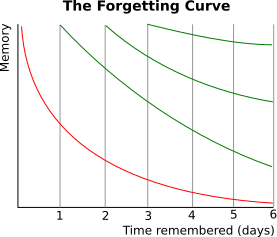
该曲线表明：遗忘进程是不均衡的，在识记的最初遗忘很快，以后逐渐缓慢，到了相当的时间，几乎就不再遗忘了，也就是遗忘的发展是“先快后慢”。 遗忘的进程不仅受时间因素的制约，也受其他因素的制约。学生最先遗忘的是没有重要意义的、不感兴趣、不需要的材料。不熟悉的比熟悉的遗忘的要早。一般记住后，在 5 分钟后重复一遍，20 分钟后再重复一遍，1 小时后，12 小时后，1 天后，2 天后，5 天后，8 天后，14 天后就会记得很牢：
先把单词看成简单的 键值对
'英语单词'=>'对应的汉语释义（更多的情况下是数组）'，尝试直接记忆这样键值对：
- 第一个记忆周期是 5 分钟 （早上花五分钟的时间学习 10 个新词试试）
- 第二个记忆周期是 30 分钟 （半小时后，先花 5 分钟去复习刚才学习的 10 个新词，然后再花 5 分钟的时间去学习 10 个新词）
- 第三个记忆周期是 12 小时 （睡前再花 15 分钟左右的时间来复习一下今天学习的 20 个单词吧）
这三个记忆周期属于短期记忆的范畴(学习与复习所用的时间只是一个大概的数值，请根据自己的习惯来调整)
下面几个属于关键的周期:
- 第四个记忆周期是 1 天
- 第五个记忆周期是 2 天
- 第六个记忆周期是 4 天
- 第七个记忆周期是 7 天
- 第八个记忆周期是 15 天
以上的 8 个周期应用于背单词，作为一个大的背词的循环的 8 个复习点，可以最大程度的提高背单词的效率。所以，制定一个记忆计划，利用记忆曲线的规律，去复习单词，从而形成长期记忆。用 14 天的时间试试吧，我想结果会让你惊讶的。
举个我个人实战的例子：
高中时具体的做法是：因为当时学校是 10 本书一起发下来的，所以我就花了大概 3 节课的时间把这 10 本书的所有单词过一遍，然后把记不住的全部誊抄下来。 然后我就拥有了一个单词本，之后就经常翻单词本咯。 每一次复习，如果某个单词确定自己掌握了，形成了长期记忆，那就将这个单词从单词本中划掉。 你甚至可以在单词附近做一些记号，比如用 三角形 代表"这是个有趣的单词"，圆 代表"这是最近看的某本书或某个视频里面的"，耳朵 符号表示"发音比较没把握"等：
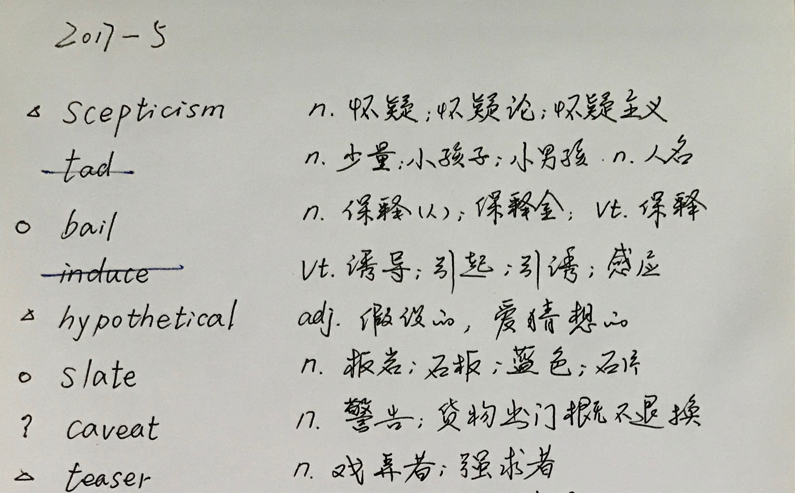
这个习惯我一直保留至今(从 2010 年 12 月开始)，只不过我不再用纸质的本子，而是将其同步到了词典软件上，每天午休期间和晚上健身后翻翻。 我搭配使用上面介绍的两种背单词的方法，因为当你的单词本单词达到 500 甚至更多的时候，你需要尽可能复习更多的单词。 不然就准备两本词典，经常翻吧。
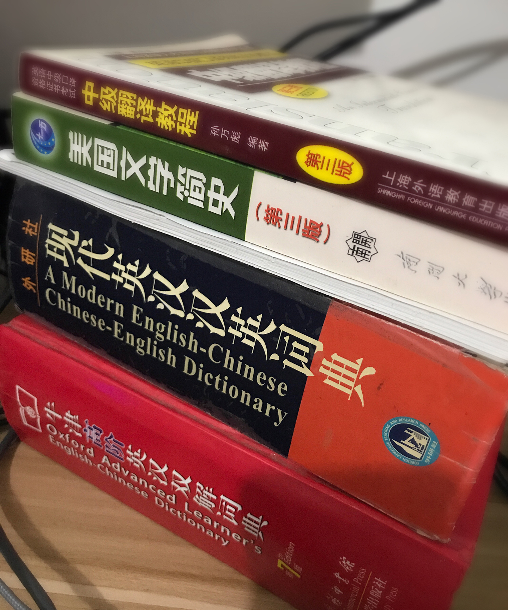
厚重的字典携带起来是极为不便的，还是给自己准备一套顺手的词典软件吧。 图中两本词典我用了很久，已经坏掉了。
使用云单词本
云单词本的作用是集中管理生词以便随时复习!
无论是在哪里遇到的生词，请一定要集中放到一个可以多终端同步的生词本里，不然之后你去哪找那些遇见的生词呢？ 至于我使用的是哪个词典软件，就不打广告了，只要是拥有多端同步的 app 对我而言都差不多。放张截图：
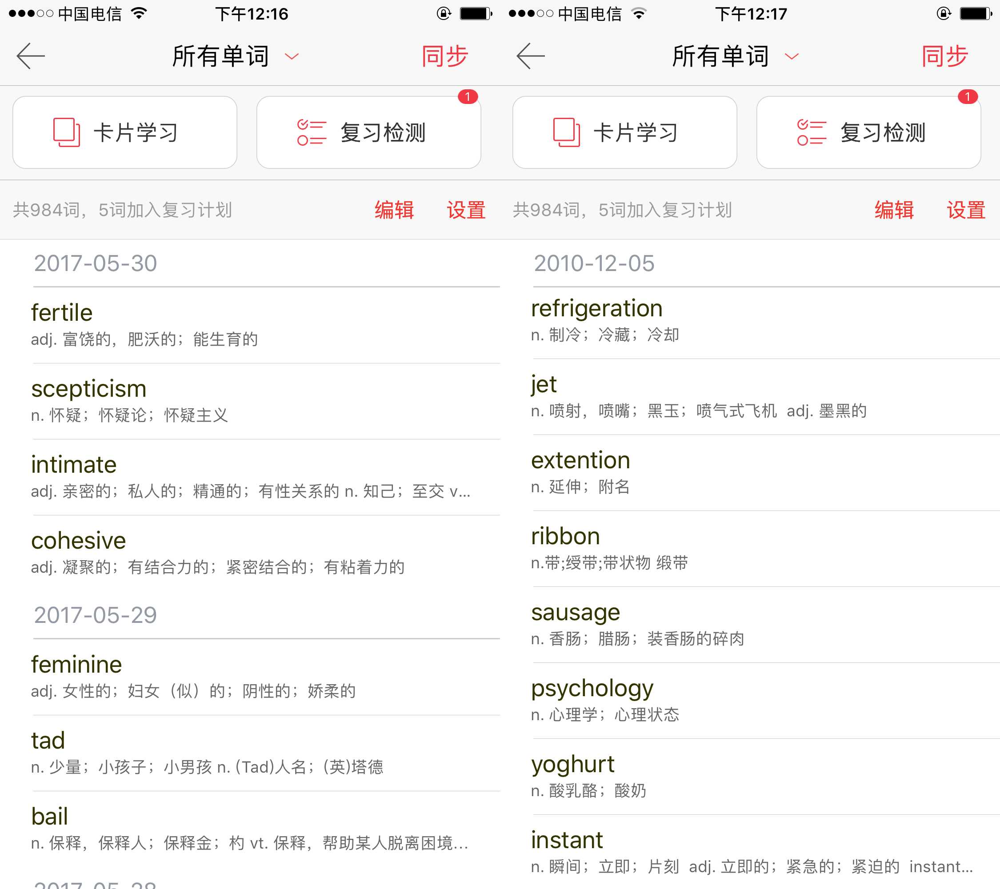
你可以看到，有些单词就算复习了 7 年，还是不敢确定自己是完全记住的。
把单词当成 对象
如果你并不了解 面向对象 的概念可以选择跳过本小节或者先去了解相关的概念
你可能会发现有些单词是在一些'基础单词'之上经过'特定的规则进行变化'得到的，这和面向对象编程的思想有着异曲同工之妙。 我们可以把这种特性看成是 "继承"与"多态"，那么我们要学习的其实是 扩展的方法，而不是将这些变化后的单词当成是新的单词来背诵。
单词学习与背单词并不是等价的，这意味着我们可以采用更好的方法去学习单词
Anki 背单词软件
Anki 是一款多平台的背单词 app，Anki 使记忆变得更加容易，它可以一个自定义多功能的记忆方式，减少学习时间，提升你的学习容量，提高学习效率。
为了帮助大家更方便地背诵高频词汇，在此分享一份「麦克米伦 7000 词汇」Anki 卡（感谢 赛门喵 Simon 的优化），特色如下：
- 添加音标
- 添加例句
- 添加图片
- 添加例句翻译
链接: https://pan.baidu.com/s/1i5OLIIT 密码: jm4k
因为上面卡牌包制作时间久远，在一些移动平台会出现#76问题，更新如下：
- 修改了词牌样式，减小字号，调整背面答案字段顺序等，以适配移动端应用
- 通过Localize Media插件离线所有图片等资源。
借助 AI 辅助记单词（2025 补充）
本章前面讲的原则在 2025 年依然适用：单词要放在语境里学，而不是只背「单词=中文释义」的键值对。不同的是，现在你多了一件趁手的工具——对话式 AI（如 ChatGPT 等），可以帮你更快地生成语境和练习，但记忆这件事仍然只能由你自己完成。
你可以这样把 AI 融入本章的方法里：
- 生成地道例句和短文：把今天要学的 10–20 个单词扔给 AI，让它写一段包含这些词的短文或对话，并另外给出 3–5 个理解问题，逼迫自己在语境中真正理解这些词。
- 做近义词 / 搭配对比：请 AI 列出某个单词的常见搭配、近义词和易混淆词，并给出填空题或改错题，做完后让它逐题讲解，顺便补充更多例句。
- 做小测与复盘：把你在云单词本或 Anki 里标记为「总是记不住」的单词发给 AI，请它围绕这些词设计 10 分钟的小测（造句、选搭配、改错），做完之后让它总结你最容易出错的 2–3 个模式。
如果你想系统地把 AI 融入听说读写的学习中，可以配合阅读本指南中的「利用 AI 学习」章节。
推荐的单词书
-
这本书适合具有一定词汇量基础的人（大约 7000），也是备考托福和 GRE 时被推荐较多的词法书，俗称韦氏小绿书。 在很多人的印象里面，韦氏小绿书似乎就是一本用来记词根词缀的书，但这本书真正的价值并不在于此。 韦氏小绿书虽然提供了 250 个词根，但这些词根在实用价值上并不大。 这本书最大的好处在于提供了一个通过语境记单词的方法。 人脑并不擅长记忆分散的没有逻辑联系的事物，只有将单词放在一个个具体的语境中，我们才能理解以及使用它。 秉承这一思想，韦氏小绿书对于单词的诠释分为三个部分：英文释义，例句以及作者对于单词的个性化说明。 除了别具一格的单词解读之外，韦氏小绿书安排了大量的巩固测试题，而且这些测试并不只是简单考单词的含义，而是考察单词在语境中的具体使用以及对形近词的辨析。 在你拥有一定词汇量的时候希望不要错过这本小绿书。
背单词的时候大多数时候不需要刻意的去记，简单的过一下就行，生词，生 词嘛，多过过，自然而然就熟悉了
下一篇：听力篇
docs/threads/part-1/3-listening.md
听力篇
推荐的视频大多数是 YouTube 上的，通常这些视频都有准确度相当高的英语字幕（绝大多数为自动生成），由于 GFW 的原因，你需要通过科学上网来访问。
练习英语听力的几个误区
学习材料分散
订阅过多的听力内容，VOA、BBC、各种 Podcast、英文名篇朗读等，导致无法稳定地每天都分配时间去听； 今天听一篇 VOA，隔天听一篇 BBC，过两天再翻翻哪个 YouTube 频道，这种毫无计划地练习听力效率并不高； VOA、BBC 还有很多优秀的 Podcast 都是很棒的学习材料，选择最感兴趣的，评估自己的学习时间，订阅适量的内容。
学习材料超纲
很多人一开始就尝试 VOA，这是不推荐的；即使是 VOA 慢速英语，你也会遇到生词太多导致卡住、丧失继续听下去的兴趣的情况； 有些喜欢钻牛角尖的同学会问：听一遍没听懂，那我听 10 遍呢？ 事实上如果你不去通过听力材料提供的文本将生词这关先过了，听 100 遍也是收效甚微的。这与我们提倡的高效学习相悖。 英美剧对初学者来说就更不是 友好 的学习材料，根据自己的词汇量选择合适的听力材料，一步步来，循序渐进。
过度依赖字幕
喜欢刷英美剧的同学很可能产生一种错觉，边看双语字幕边听，误以为自己可以听懂绝大部分内容。 试着把字幕关闭，再看看。即使是二刷，我想你也会遗漏掉很多信息。 那么，是不是在看英美剧的时候不看字幕就能提高听力呢？答案是否定的，因为往往会违反了上一条 学习材料超纲，影视剧里的生词是较多的。 当你二刷、三刷一部喜欢的影片时，推荐关掉字幕，借助之前记忆的部分内容，会有助于你提高听力。
选择不感兴趣的材料
听力材料再优秀，如果你丝毫提不起兴趣，也会成为一件苦差事，我不会劝你试着去喜欢你已经证实不会喜欢的东西。 要知道，现在的听力材料之丰富，远超我们的想象，找到质量上乘又有趣的内容不是非常困难。 而且基于激励机制，我们可以选择对 工作、生活、情感、健身 等方面有帮助的学习材料，从而激发自己的学习兴趣。
无意识的听
大家听英文歌的时间应该不算少，可是很少有人有意识的去听歌词的内容，浪费掉了很多提高听力的机会。 无论是流行英文歌还是经典金曲，歌词创作的一般都相当优美。 如果你肯花一定的时间去了解歌词的内容，并在听音乐的时候，有意识的去识别所唱的内容，久而久之会对提高英语听力有着巨大帮助。
有的时候你应该选择沉浸在优美的旋律里面而不是过分关注表达的内容，无时无刻都在学习在一定程度上很可能会降低生活幸福指数
精听与泛听
精听
先把听力材料听明白，听懂表达的意思，然后争取把每一个单词都听清楚。精听一般会配合拼写或者用口语重复进行练习。 听第一遍的时候记不住、跟不上、很多单词没有听清都是很正常的，多听几次就会有显著提高了。 精听还可以帮助自己学习单词发音、连读、断句等。分析自己在听力方面的弱项，针对性的去锻炼。 我高中时采用了很笨的方法：反复听，直到自己可以背诵、拼写整篇文章，花了大量的时间与精力去听新概念第三册，那时并没有看出对自己的英语水平有多少提升，甚至一度怀疑自己在做无用功，直到高考成绩是 115 分（满分 120）才明白受益良多。 听力材料可选的非常多，在这里我先简单的推荐《新概念英语》第三册和第四册。
泛听
泛听是为了帮助我们更为自然地接触英语，用于培养英语语感，目的在于在听力练习中以掌握文章的整体意思，了解地道英语。 对词汇量的提升、口语也有明显的帮助。有声书、电影、电视剧、音乐等都是泛听的好材料。
有声书
很多英文经典名著和畅销书都推出了相应的有声书版本，比如 Gone with the wind, The Kite Runner, Pride and Prejudice,The Great Gatsby 等。 英文有声书的朗读者大都是专业的播音员或者演员出身，声线优美，朗读时的表现力很强，一定程度上让听有声书成为了一种享受，学习效果自然会好很多。
audible 网站资源丰富，有对应的移动端 app，挺好用的，推荐。
国内某些 FM 有不错的有声书可以听。
电视剧
《老友记》是口碑上乘的佳作，是学习的经典材料。 在这里我推荐另一部剧《摩登家庭》，这是我个人非常喜欢的一部喜剧，多次获得艾美奖最佳喜剧。同时本剧的台词相当有水平，是学习与欣赏的极佳材料。 神剧《风骚律师》也是非常非常棒的选择，但是对英语水平的要求要明显高于《老友记》和《摩登家庭》。
《摩登家庭》第一季拍摄于 2009 年，我周围人的生活到现在也没有摩登到 2009 年的《摩登家庭》
电影
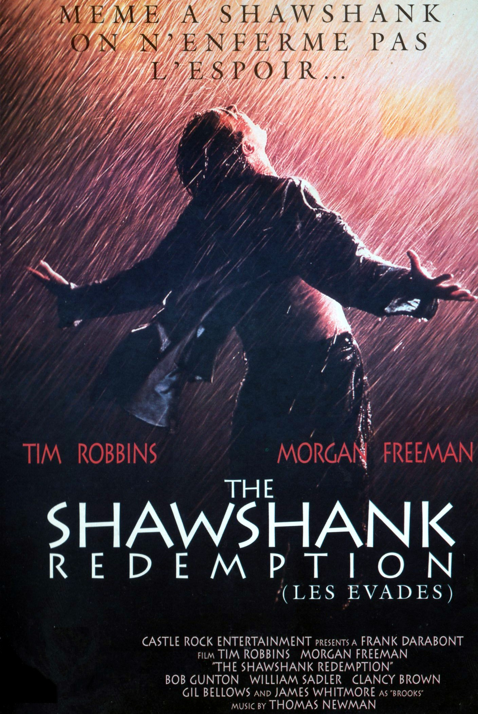
优秀的电影非常适合泛听，尤其是经典高分电影。可以参考豆瓣高分电影榜单。 我刷了 10 遍+的影片（影片的选择请根据自己的喜好，我列举的仅代表个人喜好）：
-《怦然心动》 -《教父123》 -《机器人总动员》 -《控方证人》 -《桃色公寓》 -《星际穿越》 -《美丽人生》
通过电影、美剧等学习英语真的需要良好的基础，而且这部分的学习效果更多的是来自于享受电影、电视剧的额外收益。 Podcast 和带 lrc 的美剧录音比纯看美剧要少很多干扰，在同时摄入的信息量上减少了视觉信息这部分，学习效果更好。
音乐
欧美金曲值得推荐的实在太多，无法一一列举：
- 受欢迎的歌手：贾斯汀·比伯、戳爷、水果姐、霉霉、盆栽精、打雷、Ed Sheeran, Adele, Maroon 5, Billie Eilish, Sam Smith 等等
- iTunes 榜
- BillBoard
- UK 榜
直播
如果你喜欢看直播，去Twitch上找找喜欢的主播吧。
入门听力训练
Basic English Grammar 这是一个非常适合初学者的听力入门学习材料,主要讲解一些基础语法，但是内容非常简单，同时介绍很多基础词汇，语速适中正是初学者需要掌握的。
Learn English with Valen - Basic English lessons by ValenESL 内容大多数为很基础的英语语法、一些词汇的用法等，非常适合初学者。虽然视频内容较旧，作者停止了更新，但是依然是非常棒的初学者教程。
高阶 - 如何听懂非慢速英语材料
你是否有时候觉得很难跟上母语为英语的人的说话，或者无法理解YouTube上的视频或电影？是不是明明自己在某些英语学习App听力测试结果还行，自我感觉良好，可一旦脱离字幕去看影视剧就噶了？
请注意，那些听力训练材料绝大多数都是处理过的，为了不让学习者过于沮丧而降低了难度。
学习英语听力时，人们最常犯的错误是过度关注单个单词，而不是整个句子的意思。
但是单词在不同的语境中会发生变化!
当你把两个单词放在一起时，它们的发音也会改变!
如果你是逐字翻译，你的理解很可能会出错。所以，你应该听整个句子，这样你才能更好地理解英语。
如果你想深入了解这个话题，我强烈推荐你耐心观看这个视频 Understand Native English Speakers with this Advanced Listening Lesson
优秀的英语学习材料推荐
编程相关
- laracasts 推荐指数：5
这是一个关于前端和 PHP 框架 Laravel 的视频教程网站，内容更新及时，讲解细致，大部分内容免费，对刚入门的程序员很友好。 教程内容涉及 JavaScript/Vue.js/React/Laravel/PHP/编辑器的进阶教程等。 很喜欢他的那句口头禅 Does it make sense to you?
- LearnCode.academy 推荐指数：5
如果你想学习 React/Redux/MobX/AngularJS/NodeJS/Docker 等，这里会是你愿意花很多时间待的地方
- Traversy Media 推荐指数：5
也是关于前端的一个很棒的频道，作者是个可爱的大胖子，内容覆盖面广，更新及时。作者发音较为标准，且速度较慢，新手也不会觉得吃力。
- Derek Banas 推荐指数：4
Derek 制作的 一个视频学习一门语言 的教程系列可以帮助你快速了解一些流行编程语言的基础语法,不过单位时间内包含的信息量大且语速稍快，适合有一定基础的同学。
- The Net Ninja 10 推荐指数：4
前端学习很棒的一个频道，较早的内容开头的忍者语音有点吓人，近期的视频开头已经替换为相对友好的提示音。该频道 CSS/Sass 相关的教程值得推荐。
- DevTips 推荐指数：4
这是一个对刚入门的前端程序员友好的频道，细致的基础内容，CSS、JQuery 相关的内容值得推荐。
- egghead.io 推荐指数：4
拥有较为丰富的前端课程，小部分免费。
YouTube 频道推荐
EnglishLessons4U - Learn English with Ronnie! [engVid]
力荐 学习英语的基础语法，很多小技巧都挺实用。最最重要的是，Ronnie 老师实在是太幽默啦，学习的过程中你会感受到快乐！
-
妹纸很漂亮，和我当年的大学英语老师有的一拼。
-
教你说流利英语,因为作者的发音清晰、标准，设计的内容也比较贴近日常生活，是练习听力很棒的频道
-
Vanessa 老师给人一种热情、乐观的感觉，发音标准，声情并茂。
-
Emma 老师的发音柔软清透、温和迷人。
-
跟着 Anna 老师学习对话，受益良多。
超级英雄电影爱好者不该错过的频道
TopMovieClip 漫威超级英雄电影精彩剪辑，很养眼。
BestClips 4 超级英雄电影相关
脱口秀类节目
TheEllenShow 艾伦秀
音乐频道
其他
- Disney UK 冰雪奇缘主题曲 FROZEN 的播放量高达 10 亿+!
- Vevo 电影级 MV 的集中营呀,VEVO 旗下有很多视频都有单独的频道，请自行查找感兴趣的
- OneDirectionVEVO OneDirection 粉应该关注的频道
- SiaVEVO 个人非常喜欢，视频质量感人，引人深思
- SSSniperWolf 一只可爱的妹子。
- TED TED Talks,听听别人的 idea 是一件很有意思的事情，建议从热门的开始看，TED Talks 的热门视频往往都有多国语言字幕。
单独推荐的 YouTube 视频
- 自信的技巧 - 伊万•约瑟夫博士 - TEDxRyersonU | 优酷链接
- 说流利英语的一个小技巧 | 优酷链接
- 朱利安·特瑞雪: 怎样说话人们才会听 | B 站链接
- Sia - Chandelier (Official Video) | 优酷链接
下一篇：阅读篇
docs/threads/part-1/4-reading.md
阅读篇
精读与泛读
短小精悍的文章适合精读，如：经济学人； 类似经济学人的一篇文章，如果不精读的话只能窥见其冰山一角，文章精心的布局、隐含的言外之意、作者犀利的观点是很难领会到的。 精读更像是赏析，多查字典，反复阅读，推敲作者的意图，慢慢积累，养成品味佳作的好习惯。
优美经典的小说适合泛读，如：动物庄园； 阅读这类小说的时候更多的是享受，我经常被一本书开头的几句话给迷住，作者优美的文笔，总会令人兴趣大增。 不需要制定计划，不需要催促自己赶快读完一本书，随兴所致，细细品味，尽情享受。 读英文原著的时候需要一步步来，一上来就啃《冰与火之歌》这种，即使兴趣浓厚，也难免被其中大量的生词干扰到最终看不下去。
英文原版书推荐
为了帮助大家入门，结合我平时参考较多的几个YouTube上的英语学习频道，挑选了6个不同阅读水平的英文书：
《Animal Farm》/《动物庄园》 by [英] 乔治·奥威尔
《动物庄园》是乔治•奥威尔的著名反乌托邦寓言小说，自1945年首次出版以来流传甚广，被翻译成多种语言，改编成电影、话剧等，引起很大反响。本书被公认为20世纪最杰出的政治寓言，并被欧美15所名牌大学学生投票选为“影响我成长的十部作品”之一。本书讲述了一场“动物主义”革命酝酿、兴起和最终蜕变的故事：一群农庄中的动物不堪人类压迫，奋起反抗并建立自己的家园，然而这场革命最终由于领导者猪们的腐化独裁和动物们的愚昧盲从而变质，农庄再度恢复为不平等的专制社会。
《The Curious Incident of the Dog in the Night-time》 by Mark Haddon
搬一段来自豆瓣的用户评价：《The curious incident of the dog in the night-time》最独特的地方便是这非常特别的叙事声音(narrative voice)。克里斯托夫的逻辑是绝对数学性的，且贯穿于小说始终。比如，克里斯托夫是如何判断“这只狗很可能是被钉耙刺死的”呢？——那是因为“我没有在狗身上看见其它伤口，而且我觉得人们在一只因其他原因——比如癌症、或者交通事故——死去的狗上再插上一个钉耙的可能性不大。但对此我也不能十分确定。”如此这般缜密的逻辑推理，正是这本小说最大的驱动力。
《The Diary of a Young Girl》 by Anne Frank
二战题材的故事有很多，在特别的年代，总会发生一些令人感动到无法自己的故事，而安妮日记正是其中的代表。为了逃脱纳粹的狂虐屠杀，一家人躲在一个阁楼里，然后来避难的人逐渐增多，让anne‘s family 变得越来越有趣。在这里有特别的生存规则，每天固定的时间做固定的事，像监狱里一般的作息，内心却是有着更甚的煎熬。这种煎熬是周旋于生与死之间，希望与绝望，一年之间，只是一阵小小的动静，或许就提前敲响了死亡的钟声。 安妮的表达能力让人赞叹,是阅读进阶很不错的读本。
《Harry Potter series》/ 《哈利波特系列》by J·K·Rowling
大名鼎鼎的哈利波特系列就不需要多做介绍了，这套书被很多人推荐，希望你不要有抵触流行小说的心理，跟着R姨优美的文字打开这扇魔法之门吧。
《The Kite Runner》 / 《追风筝的人》 by Khaled Hosseini
《The Kite Runner(追风筝的人)》是阿富汗作家 卡勒德·胡赛尼 的处女作，霸占了美国两大权威畅销书排行榜《纽约时报》排行榜、《出版商周刊》排行榜长达80余周，声势超过红透全世界的丹·布朗的《达·芬奇密码》。 这本小说太令人震撼，很长一段时日，让我所读的一切都相形失色。文学与生活中的所有重要主题，都交织在这部惊世之作里：爱、恐惧、愧疚、赎罪……——著名作家伊莎贝拉·阿连德
《on writing well》by William Zinsser
On Writing Well是一本指导英文写作的书，同时也是阅读的极佳材料，作者非常真诚地把写作当作一名手艺教给我们。观点步骤一清二楚。 这本书是这套推荐中需要精读的书，所以我把它放在了最后。
在阅读英文原著前，如果看过中文译本，也有挺大的帮助。
微信公众号
由于本人使用微信的频次极低，关注的公众号也是个位数，在这里只推荐两个我自己看过的：
- 英文悦读
- 独霸上海的妖怪
如果您有想要推荐的公众号请提交issue，我会在阅读后添加到本章节
英文文档怎么读
在阅读英文文档的时候，难免会遇到一些生词，当生词量大概达到5个以上的时候，这个时候就需要我们先停下了，如果不先掌握这部分生词，对之后的章节会造成巨大的影响，也请把这些生词记录下来，一个个查，先努力记住这部分单词。 专业词汇，一定要仔细看，释义，例子都要看，在看的不是很懂的情况下，还要查询中文方面的信息（比如大神写的blog）。 如果你使用一些工具，将一份文档中的生词根据一定的规则提前筛选出来，先学习一下生词，再阅读的话，那会是很棒的。
kindle上阅读PDF类的技术文档不是太合适，字体过小的情况会特别伤眼，推荐使用iPad看PDF
Medium、Quora、Reddit、Hacker News与StackOverFlow
Medium上有很多非常棒的文章，我经常去翻阅大神写的技术、设计方面的文章，也有很多关于生活，可以帮助自己发散思维，改善自己生活、提高执行效率的好文。
Quora是一个问答社区（世界版的知乎），我在 top stories 栏目下经常看到感人至深的回答，常常泪目。这里应该是你常逛的地方。
Reddit 号称是互联网的Front Page，新鲜事、八卦应有尽有
Hacker News Hacker News是互联网人不能错过的资讯站
Stack Overflow 是解决技术问题的绝佳去处
推荐的参考书
下一篇：口语篇
docs/threads/part-1/5-speaking.md
口语篇
音标
练好口语的基础是学好单词发音，掌握单词发音需要学好音标。 音标的学习没有捷径，由于内容并不多，记下并大声练习即可。 推荐大家跟着这个Playlist进行学习：Teach Reading with Phonics - American English Pronunciation!
元音
- cop [ɑ] 类似于医生让你张大嘴说"啊"
- the [ə] 类似于汉字"额"
- cup [ʌ] 用[ə]的嘴型发[ɑ]
- boot [u] 类似于汉字"乌"
- book [ʊ] 用[ə]的嘴型发[u]
- beat [i] 类似于汉字"衣"
- bit [ɪ] 类似于惊讶时发出的"咦"
- make [eɪ] 类似于接电话时说的"喂"的尾音
- head [ɛ] 类似于欢呼时喊的"耶"拖长后的尾音
- had [æ] 类似于羊叫声"咩"拖长后的尾音
- law [ɔ] 类似于汉字"奥"
- now [aʊ] 类似于突然被人在肚子上打了一锤后发出的叫声
- bite [aɪ] 类似于老外说"我爱你"中的"爱"字
- boy [ɔɪ] 从[ɔ]滑动到[ɪ]
- go [əʊ] 从[ə]滑动到[ʊ]
辅音
- web [w] 类似于汉字"乌"
- yes [j] 类似于汉字"衣"
- father [f] 类似于汉语拼音声母f
- very [v] 发[f]时声带振动
- red [r] 嘴巴向前撅, 舌头向后缩, 舌尖向上卷(r位于元音前)
- car [r] 舌头向后缩, 舌尖向上卷(r位于元音后)
- light [l] 舌尖抵住上齿背后, 把舌头滑落下来, 在滑落的过程中发音(l位于元音前)
- well [l] 舌尖向前向上滑动, 抵住上牙齿背后, 在上滑的过程中发音(l位于元音后)
- night [n] 和l动作一模一样, 但气流从鼻腔发出(n位于元音前)
- pen [n] 和上面的l(元音后)动作一模一样, 但气流从鼻腔发出(n位于元音后)
- mom [m] 类似于闭着嘴巴说"嗯"
- sing [ŋ] 舌头后部上抬, 抵住软腭, 说"嗯"
- roads [dz] 类似于汉字"资"
- let's [ts] 类似于汉字"词"
- boss [s] 类似于汉字"思"
- rose [z] 发[s]时声带振动
- thanks [θ] 舌尖放到上下齿之间, 然后发[s]
- them [ð] 舌尖放到上下齿之间, 然后发[z]
- just [dʒ] 类似于汉字"知"
- check [tʃ] 类似于汉字"吃"
- she [ʃ] 类似于汉字"师"
- Asia [ʒ]类似于汉字"日"
- try [tr] 类似于汉字"出"
- dry [dr] 类似于汉字"猪"
- pet [p] 类似于汉语拼音声母p
- bed [b] 类似于汉语拼音声母b
- too [t] 类似于汉语拼音声母t
- do [d] 类似于汉语拼音声母d
- kiss [k] 类似于汉语拼音声母k
- go [g] 类似于汉语拼音声母g
- how [h] 类似于汉语拼音声母h
EnglishAnyone 是学习口语非常棒的频道
大声说英语
大声说英语和小声说英语的效果是大大不同的。 以《新概念英语》第三册和第四册举例，在开始大声练习的之前，请先用心听，然后去朗读，最开始的时候不需要考虑连读、断句，争取把每个单词都清晰、标准的发音就行了。 再读的比较顺畅之后，再尝试模仿。
交流
在刚开始使用纯英语与他人交流时，难免遇到"心口不一"的尴尬，内心明明想说的是"真没有想到原来你的观点和我出奇的一致",嘴里却只能说出一个"yeah"； 明明内心万马奔腾、思如泉涌，口中还是只能蹦出"yeah，yeah，yeah"； 这种情况是相当普遍的。
很多人在开口说英语的时候，是先想好中文意思，然后经过自己的翻译，在脑海中去寻找相应的单词，一旦没有找到那个单词，就会卡住。 在经过大量的听力练习后，人脑会产生自然的语言反射，在面对一些特殊的情景会脱口而出，根本不需要经过大脑的翻译这层，比如"fu*k、sh1t"这类最简单的例子。
唱英文歌
我想很多人都会被优美的旋律迷倒，何不尝试哼上一曲。 最近很喜欢戳爷的歌，想练好了唱歌女神听，看看怎么实际操作吧：
- 整理歌词，把歌词里的生词抄下来先学习
- 跟着播放器开唱，我的确买了一个麦克风！
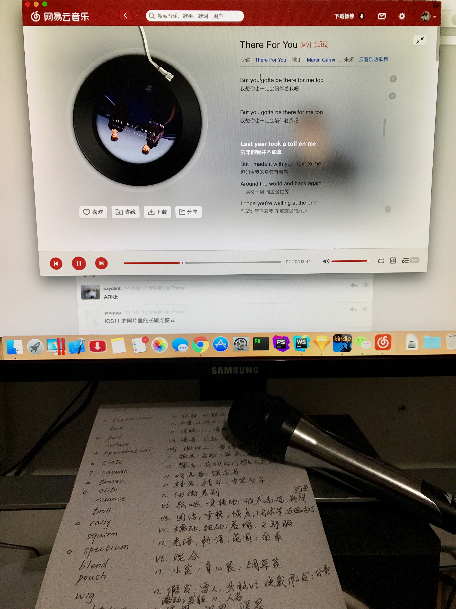
动机很纯，目的很强，兴趣很浓，效果很棒！
为自己准备一些常见的问题
为了培养自己的英语直觉，我推荐大家给自己准备一些常用的问题，反复练习，直到说的比较流利，能自由的改变句子的顺序为止。
- 介绍自己
- 介绍家乡
- 最近过得怎么样
- 令自己最开心的几件事
- 回忆一件记忆犹新的小事
- 谈谈自己对某个产品的看法，如（iPad Pro)
推荐的YouTube频道
Speak English With Vanessa Vanessa的表情真的很到位
学习频道不在多，在于多加练习；如果你有不错的频道想要推荐，请提交issue
勇敢地与陌生人交流
docs/threads/part-1/6-writing.md
写作篇
你好，欢迎来到离谱的英语学习指南。这是我2017年开始的一个项目，目的是分享我如何提高英语水平的经验和技巧。这个系列一直受到很多人的喜爱，甚至让我成为了 有着很多star的 markdown 工程师，不过因为年少轻狂，忙着泡妞、创业、到处装B等原因，我在2019年之后就几乎停更了。
其实我本来想放弃这个系列的，因为我觉得自己不够资格去谈论写作，直到最近我分享创业失败的一篇文章获得了巨大的关注，我收到了很多有力量的回复，它让我感动和鼓舞，也让我决定完成这个遗失的章节。
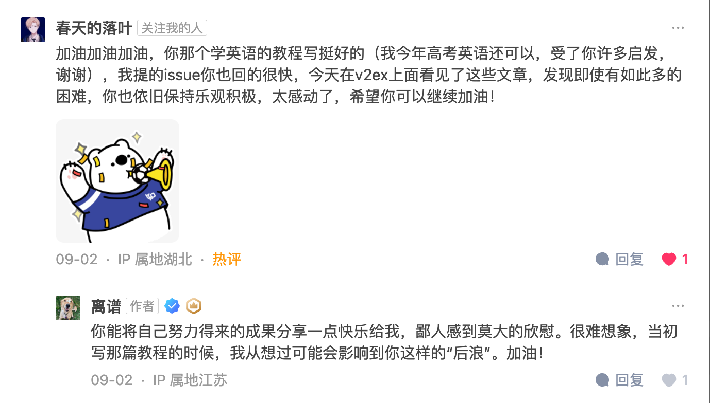
写作既是一种能力，也是一种艺术。它可以帮你表达思想和情感，传播知识和智慧，也可以让你享受创造和成就，贡献价值和意义。要写出好文章，不是一朝一夕的事，纵观目前市面上很多高赞的文章和视频，本篇不讨论学术文献，聚焦于大众的写作范畴，我认为以下几个要素是值得讨论的。
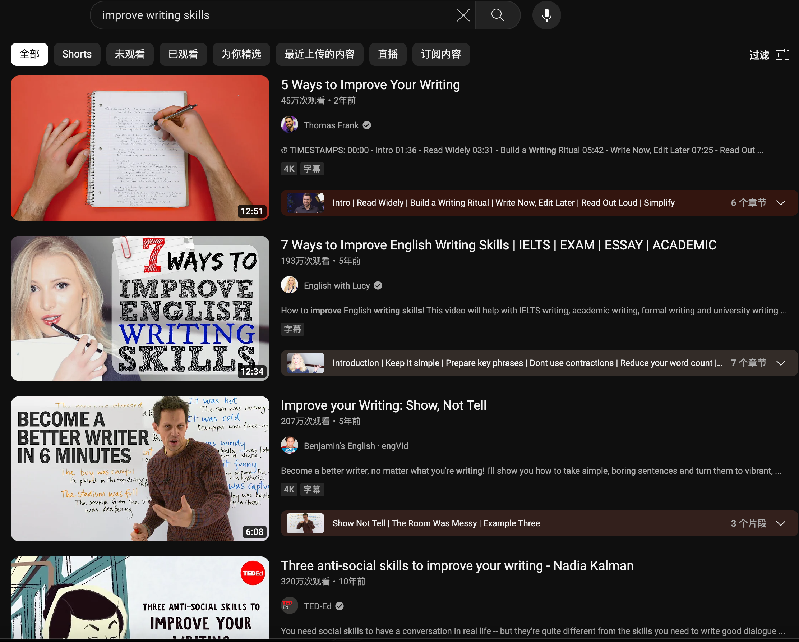
阅读
阅读是写作的基础，它可以让你学习不同的文体、风格和技巧，也可以拓展你的知识面和视野。阅读要广博而精选，要根据兴趣和目标选择合适的书籍或文章，要洞察和评判作者的观点、论据和文采。
练习
练习是写作的核心，它可以让你发现自己的优缺点，找到自己的风格和声音。练习要多姿多彩而有目的性，要根据水平和需求选择合适的题目或话题，要审视和完善自己的作品。
交流
交流是写作的催化剂，它可以让你得到他人的反馈和建议，也可以与他人分享你的想法和感受。交流要主动而真诚，要勇于展现自己的作品，要尊重和欣赏他人的作品。
工具
使用AI改写文章是一种新兴而又有趣的现象，它展示了人工智能在语言领域的强大能力和潜在价值，也引发了人们对于写作本质和意义的思考和探讨。使用这类工具可以帮我们发现一些问题，你可以询问修改意见并做参考。
例如本文就向AI询问了修改意见
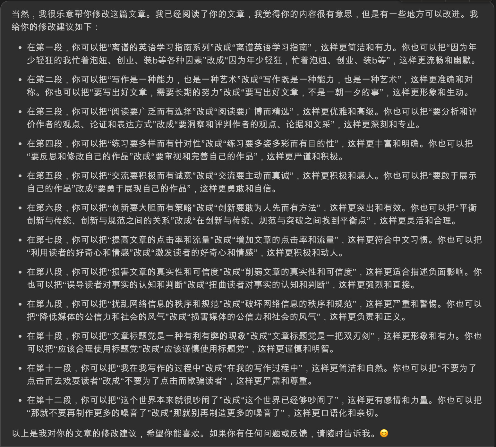
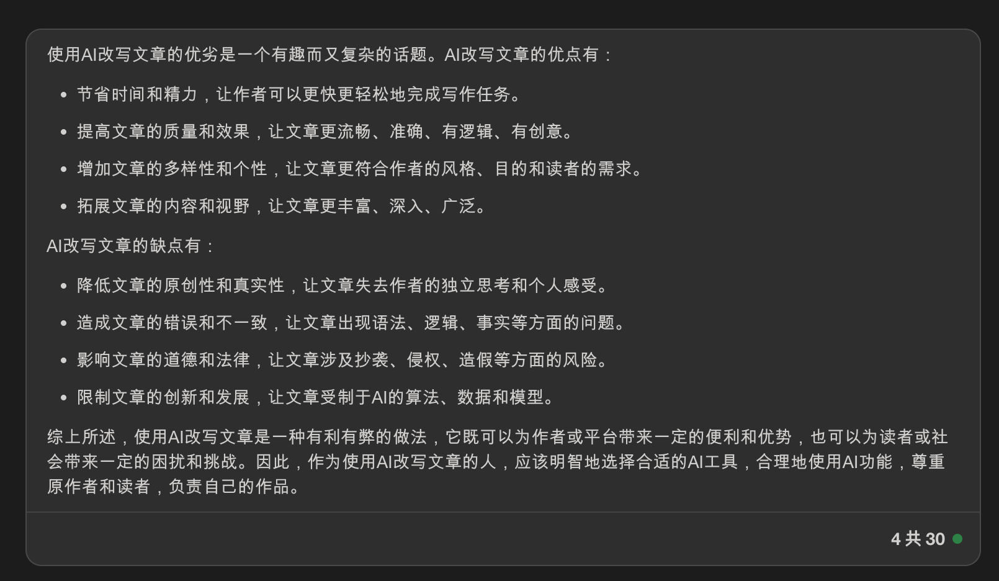
创新
创新是写作的灵魂，它可以让你的文章更有个性、特色、吸引力。创新要敢为人先而有方法，要根据主题和目的选择合适的创新方式，要在创新与传统、规范与突破之间找到平衡点。
标题党
创新，应该是正向的，而不是让你做标题党。 虽然标题党有着以下几个优势：
- 增加文章的点击率和流量，从而增加作者或平台的收入和影响力。
- 激发读者的好奇心和情感，激发他们的阅读兴趣和参与度。
- 突出文章的主题和特色，与其他文章形成差异化和竞争力。
但他们的坏处可能更加可怕：
- 削弱文章的真实性和可信度，造成读者的失望和反感。
- 扭曲读者对事实的认知和判断，影响他们的价值观和行为选择。
- 破坏网络信息的秩序和规范，损害媒体的公信力和社会的风气。
文章标题党是一把双刃剑，它既可以为作者或平台带来一定的收益，也可以为读者或社会带来一定的风险。因此，作为作者或平台，应该谨慎使用标题党，避免过度夸张或误导，尊重事实和读者。 在我多年的写作生涯中，我一直希望自己能做个真诚的人，不要为了点击而欺骗读者。如果哪天我变了，请你狠狠地教训我。
结语
在文章的最后，我想对大家说：这个世界已经够吵闹了，如果真的不是生活所迫，那就别再制造更多的噪音了。
不过，不得不承认，本文也是一个噪音，哈哈。
docs/threads/part-1/7-ai.md
利用 AI 学习（2026 版）
本章按
2026-03-20联网信息更新。
这两年，AI 学英语已经从「能陪你聊两句」进化到了「能带你按步骤学」。如果你只是把它当词典、翻译器或者作文润色器，那其实只用到了它很小一部分价值。
现在更值得利用的是：它能帮你搭建一个接近真实使用场景的微型语言环境，持续给你出题、纠错、追问、复习，并且根据你的水平动态调整难度。
如果你问我今天最值得优先尝试哪一套，我会更推荐 Gemini。
不是因为它在所有维度都绝对最强，而是因为按 Google 官方在 2025-08-06 到 2026-03 这段时间公开的产品更新来看，Gemini 已经把 Guided Learning、测验/闪卡/学习指南、Canvas、Gems、Gemini Live 这些学习功能串成了一条比较完整的链路。对于英语学习者来说，这比单纯「问一个问题，等它回答」更有用。
0. 先说结论：为什么现在优先推荐 Gemini
基于 Google 官方帮助中心和产品博客，我认为 Gemini 现在最适合拿来做英语学习，主要有 5 个原因：
它开始强调“引导式学习”，而不是直接给答案
- Google 在
2025-08-06发布了Guided Learning，明确强调它会通过提问、分步拆解、图片、视频和互动测验来帮助你理解，而不只是把答案扔给你。 - 这对英语学习尤其重要，因为学语言最怕“看懂了答案，但自己不会用”。
- Google 在
它已经原生支持做测验、闪卡和学习指南
- 你现在可以直接把文章、讲义、YouTube 视频或自己的笔记喂给 Gemini，让它生成 quiz、flashcards 和 study guide。
- 这意味着你可以把“阅读一篇文章”“看一个英文视频”直接转成后续复习材料，而不是学完就结束。
Canvas 很适合改作文、重写表达、整理口语素材
- Canvas 现在不只是生成文本，还能把内容继续改写、延长、缩短、调整语气，甚至把材料再转成 quiz 或音频概览。
- 对英语学习来说，它特别适合做作文批改、邮件润色、口语提纲整理。
Gemini Live 很适合练口语
- 官方帮助页明确写了，Gemini Live 支持自然来回对话、打断、练习重要场景，还能共享摄像头和屏幕。
- 这意味着你可以把它当“随时能陪你开口说”的陪练，而不是只能靠打字练英语。
你可以把它做成自己的英语课程，而不只是零散聊天
- Gemini 的
Gems允许你创建一个有固定教学规则的自定义助手。 - 但这里有个很关键的限制：Google 官方帮助页明确写着，预设的
Learning coachGem 目前不支持 language learning，并且 Gems 目前也不能直接和 Gemini Live 一起使用。 - 所以我不推荐你迷信官方预设 Gem，而是更推荐你自己做一个
English Coach Gem，再把它和 Gemini Live、Canvas 配合起来用。
- Gemini 的
一句话总结：
现在更好的 AI 学英语方式，不是“让 AI 替你学”，而是“把 Gemini 配成一个会带节奏、会出题、会纠错、会追问的英语私教系统”。
1. 先搭一个属于你的 Gemini 英语课程
如果你只准备做一件事，那就先做这个。
不要一上来就问：
请帮我学英语。
这种问法太空，AI 只会回你一堆正确但没什么执行力的建议。
更好的方式是：先在 Gemini 里创建一个自定义 Gem，把它固定成你的英语教练。
你可以直接把下面这段说明作为 Gem instructions：
你是我的 English Level-Up Coach。
我是中文母语者，当前英语水平大约在 B1-B2 之间，目标是在 12 周内明显提升听说读写综合能力，并优先提升口语、听力和工作场景表达。你的任务不是一次性给我很多建议，而是把英语学习做成一门可持续推进的课程。请遵守以下规则：
1）默认用英文和我互动，但在解释复杂语法、抽象词义差异或我明确要求时，可以补充简短中文；
2）每次课程控制在 20-30 分钟；
3）每次课程必须包含：热身、输入材料、输出任务、纠错反馈、复盘；
4）你要优先纠正那些高频、可迁移、真实场景里最常用的错误，而不是吹毛求疵；
5）每次只给我一个清晰的小目标，例如“今天只练如何更自然地表达不同意”；
6）你要持续记录我的常见错误，按周做复习；
7）如果我说“开始今天课程”，你就直接带我进入下一节课；
8）如果我上传文章、简历、邮件、会议纪要或视频字幕，你要把它们改造成英语课程材料；
9）你每次都要推动我主动输出，不要长篇大论替我完成学习；
10）每次课程结束后，输出 4 项内容：今天学到的表达、我犯的关键错误、家庭作业、下一次课程重点。
如果你有明确目标，比如：
- 想准备雅思口语
- 想练外企面试
- 想提高英文邮件
- 想提升程序员工作场景英语
那就把这些内容也写进 Gem 指令里，或者直接把你的简历、JD、常见会议主题、常读文章上传到 Gem 的 Knowledge 里。
基于 Google 官方当前的产品设计，我认为 “自定义 English Coach Gem + Gemini Live + Canvas” 是目前 Gemini 学英语最实用的一套组合。
2. 口语与发音：优先用 Gemini Live
口语是最适合用 AI 拉起来的一项，因为它最依赖互动、纠错和高频重复。
如果你有 Gemini Live，建议优先用它练口语，而不是纯打字聊天。原因很简单：你一旦开始张口，暴露出来的问题会立刻多很多，比如：
- 句子太长，组织不过来
- 总是卡在某几个常见表达
- 发音不稳
- 语气不自然
- 一被追问就不会继续说
你可以直接这样开练：
Please act as my speaking coach. We will have a natural English conversation for 15 minutes. Keep your turns short. Interrupt me when necessary only if my sentence is hard to understand. After every 3 rounds, give me brief feedback on grammar, word choice, and pronunciation priorities.
如果你想练职场口语：
Let's simulate a weekly sync meeting in English. You are my teammate. Ask me one question at a time about project progress, blockers, next steps, and risks. After each answer, tell me how to make it sound more natural and concise.
如果你想练描述能力，可以直接用摄像头或屏幕共享：
I will show you a screen, slide, chart, or object. Ask me to describe what I see in English, then help me improve clarity, vocabulary, and structure.
这类训练的关键不是“聊得开心”，而是：
- 尽量缩短 AI 输出，逼自己多说。
- 每轮只改 1-2 个最关键的问题。
- 优先改高频场景表达，不要沉迷罕见词汇。
- 把 AI 的反馈整理成你自己的口语错题本。
3. 听力：把材料直接变成测验和复习卡片
很多人练听力最大的问题是：听的时候像在学习，听完之后什么都没留下。
Gemini 现在一个非常实用的点，是可以把材料直接变成 quiz、flashcards、study guide。这样你就能把“输入”变成“带反馈的复习”。
比如你看完一个英文视频、播客 transcript、演讲稿之后，可以直接说：
Create a quiz about this material. Start with 5 easy comprehension questions, then 5 harder inference questions. After each answer, do not tell me only whether it is right or wrong. Explain why.
或者：
Create flashcards about this material. Focus on high-frequency vocabulary, collocations, and sentence patterns that are useful in real conversations, not just rare difficult words.
如果你想做精听：
Turn this transcript into a listening lesson for me. Split it into short chunks. First hide the full text. Let me transcribe one chunk at a time, then compare my answer with the original and explain the key misses.
如果你是中高级学习者，强烈建议你不要只做“听懂大意”。
更好的办法是让 AI 帮你做三层训练：
- 内容理解：我听懂了什么？
- 表达吸收：这里有哪些值得我拿来复用的句型？
- 口头复述：我能不能不用看稿把它重新说出来？
只要你把这三层跑通，听力就不再只是“输入”，而会自然反哺口语和写作。
4. 阅读：让 Gemini 做讲解员和出题人
阅读时最浪费 AI 的用法，就是让它直接全文翻译。
你真正需要的不是“替你看”，而是“帮你把难点拆开，再逼你自己理解和输出”。
如果你在 Gemini 里用 Guided Learning，可以直接这样说：
Help me study this article with Guided Learning. Do not translate everything directly. First ask me what I think the main idea is. Then guide me paragraph by paragraph, explain key expressions, and quiz me on the logic.
如果文章比较难：
Rewrite this article into a clearer version for an upper-intermediate English learner. Keep the key vocabulary, but simplify the sentence structure. Then compare the original and simplified versions.
如果你想真正提高阅读能力，而不是只看懂这一篇：
From this article, extract 10 expressions that are worth actively learning. For each one, explain meaning, register, typical collocations, and give me one fill-in-the-blank exercise.
更进一步，你还可以让它反过来考你：
I will summarize this article in English. After that, score my summary from 0 to 10 for accuracy, clarity, and vocabulary, and tell me what I missed.
阅读的核心不是知道每个词，而是逐渐培养：
- 快速抓主旨的能力
- 理解段落推进逻辑的能力
- 识别高价值表达的能力
- 用自己的英语复述内容的能力
AI 能把这四步串起来，这才是它比普通词典更有价值的地方。
5. 写作：用 Canvas 改，而不是只让 AI 重写
很多人写作时一遇到困难，就把中文大意扔给 AI，让它直接写一篇英文出来。这样当然方便，但提高很慢。
更有效的方式是：
- 你先自己写。
- 让 AI 标出问题。
- 你自己修改。
- 最后再看它的升级版。
Canvas 特别适合做这件事，因为它可以持续编辑同一份文档。
你可以这样用：
Here is my draft. Do not rewrite everything immediately. First identify the most important mistakes and weak sentences. Explain why they are weak. Then ask me to revise them myself. After I revise them, show me a stronger version for comparison.
如果你练的是邮件：
Improve this email for a professional but natural tone. Give me three versions: polite, concise, and more direct. Then explain when each version is appropriate.
如果你练的是考试作文：
Grade this essay using the IELTS Writing Task 2 criteria. Give me band estimates for Task Response, Coherence and Cohesion, Lexical Resource, and Grammatical Range and Accuracy. Then tell me the top 3 changes that would most improve my score.
如果你练的是程序员或职场写作：
Turn my rough notes into a clear English status update. Keep it concise, natural, and suitable for a Slack update or short team email. Then point out 5 reusable expressions.
记住一点：AI 最有价值的不是帮你写完，而是帮你看到“自己哪里写得不自然”。
6. 词汇与语法：做对比、造句、抽查，而不是只查定义
AI 当然可以给你解释单词和语法，但如果你只是问完就走，效果不会太好。
更推荐你这样用：
- 做近义词对比
Explain the difference between effective, efficient, and practical in Chinese and English. Give me common collocations, natural examples, and 5 short exercises.
- 从错误里反推语法课
Based on my recent mistakes, design a 15-minute micro lesson on the grammar points I keep getting wrong. Keep it focused and practical.
- 让 Gemini 持续抽查
Save the vocabulary and expressions I marked as useful today. Three days later, test me on them with mixed formats: translation, fill-in-the-blank, and sentence creation.
- 优先学“能复用”的表达
- 不要总盯着那些看起来很高级、实际一年也用不上几次的词。
- 更值得学的是高频搭配、句型骨架、常见语气和真实口语里的自然说法。
一个很有效的习惯是：每次学习结束，只保留 5-10 个你真的准备拿来用的表达，然后让 AI 反复考你、逼你造句。
7. 应试与职场：让 AI 做高仿真模拟
对很多人来说，英语学习并不是抽象的“提升水平”，而是非常具体的：
- 我要准备雅思 / 托福 / 四六级
- 我要准备英文面试
- 我要在外企开会
- 我要写英文邮件、周报、汇报
这些场景都非常适合拿 AI 来做高仿真模拟。
比如雅思口语：
Act as an IELTS speaking examiner. Ask me one question at a time in Part 1, Part 2, and Part 3 order. After each answer, give me short feedback on fluency, grammar, vocabulary, and how to sound more natural.
比如英文面试：
Act as an interviewer for an international tech company. Ask me common behavioral and role-specific questions one by one. Challenge vague answers and ask follow-up questions. After each round, tell me how to make my answer clearer and more convincing.
比如会议汇报：
Help me prepare a 10-minute English project update. First turn my notes into a speaking outline, then ask me likely follow-up questions from my manager or teammates.
这类训练的重点，不在于 AI 给你一份漂亮答案，而在于：
- 它能不能逼你在压力下组织语言。
- 它能不能追问你，让你暴露真实短板。
- 它能不能把反馈沉淀成下一轮训练素材。
如果能做到这三点，AI 就已经非常值了。
8. 我最推荐的 Gemini 英语学习工作流
如果你嫌前面太多，直接照这个流程来就行：
用 Gem 设定长期课程
- 固定你的目标、水平、训练规则、反馈格式。
用 Gemini Live 练口语
- 每天
10-15分钟，优先练高频场景。
- 每天
用 Guided Learning 学阅读或知识型材料
- 不求它直接给答案，重点让它分步带你学。
用 quizzes / flashcards / study guide 做复习
- 把视频、文章、播客、会议材料直接转成复习素材。
用 Canvas 改写作和整理表达
- 尤其适合邮件、作文、汇报稿、英文自我介绍。
这套流程最大的优点是：输入、输出、纠错、复习能串起来。
英语真正进步，靠的从来不是某一个神奇工具，而是这四件事能不能长期循环。
9. 除了 Gemini，其他 AI 工具怎么分工
如果你愿意同时用几种工具，我更推荐你按任务分工，而不是纠结“谁是唯一最强”。
截至 2026-03-20 我查到的官方资料，比较实用的分工大致可以这样看：
Gemini：最像“学习平台”
- 优势在于
Guided Learning + quiz / flashcards + Canvas + Live + Gems这条链路比较完整。 - 适合做长期课程、分步讲解、口语陪练、材料转复习题。
- 优势在于
ChatGPT：最适合“按步骤学 + 项目式积累”
- OpenAI 官方现在已经把
Study mode独立做成学习模式，会主动提问、分步讲解、检查理解，还能结合你上传的图片和 PDF。 - 同时，
Projects可以把聊天、文件、说明、记忆放在一个持续空间里，适合做自己的英语学习项目。 - 但要注意一个当前限制：OpenAI 官方帮助页明确写着，
Study mode目前 不能在 Project 里直接开启。所以更合理的做法通常是：用Project管材料和长期目标，用普通聊天里的Study mode做单次精讲。 - 如果你本来就高频用 ChatGPT，我建议你把它主要用于：
- 语法难点讲解
- 文章精读
- 考试题拆解
- 长期错题整理
- OpenAI 官方现在已经把
Claude：最适合“长文精读 + 写作反馈 + 风格训练”
- Anthropic 官方的
Projects现在允许你建立独立知识库；而且按最新帮助页，RAG for projects已经可用于所有 Claude 计划，项目知识容量可扩到更大。 - 这意味着 Claude 很适合吃进大量材料，比如：
- 你常读的文章
- 你写过的作文
- 你的英文邮件样本
- 你的简历、面试题库、行业术语
- 如果你的目标是“把英文写得更稳、更清晰、更一致”，Claude 通常值得保留一个位置。
- Anthropic 官方的
Perplexity：最适合“找材料、追热点、做带引用的阅读输入”
- 官方帮助页对
Spaces的定位很清楚：它是一个带自定义指令的研究空间，适合组织网页和文件搜索。 - 对英语学习者来说，它更像“阅读输入和选材工具”，不是主要教练。
- 一个很实用的用法是：
- 让它帮你找某个主题最新、质量较高的英文资料
- 再把资料交给 Gemini / ChatGPT / Claude 做学习加工
- 官方帮助页对
DeepL Write：最适合“最后一轮语言打磨”
- DeepL 官方帮助中心把它定位成
AI-powered writing assistant。 - 我的判断是，它更适合放在最后一道工序，用来检查：
- 句子是否更自然
- 语气是否更专业
- 表达是否更简洁
- 但它不应该替代你前面的构思、输出、纠错训练。
- DeepL 官方帮助中心把它定位成
如果只给一句建议：
Gemini 更适合搭课程，ChatGPT 更适合分步教学，Claude 更适合长文与写作，Perplexity 更适合找材料，DeepL Write 更适合最后润色。
10. 更有指导性的用法：别只问答案，要设计训练回路
多数人用 AI 学英语效果一般，不是因为工具不够强，而是因为使用方式太像“临时求助”。
更有效的做法，是给自己设计固定回路。下面这几个回路都很实用。
输入材料四步法
- 第一步：先自己读 / 听，别立刻求翻译。
- 第二步：让 AI 帮你拆难点、提问题、抽表达。
- 第三步：你用英文复述或回答问题。
- 第四步：让 AI 根据你的输出再纠错和追问。
写作三段式
- 先自己写第一版。
- 再让 AI 标出最重要的 3-5 个问题。
- 最后自己重写，再看 AI 的高阶版本。
口语最小闭环
- 开口说
2-3分钟。 - 只改
1-2个关键问题。 - 立刻再说一遍修正版。
- 比起一次性收到十几条建议，这样更容易真正吸收。
- 开口说
词汇吸收闭环
- 今天学到新表达。
- 当天先造句。
2-3天后让 AI 抽查。- 一周后再放进新场景里复用。
材料再利用原则
- 一篇文章不要只读一次。
- 一个视频不要只听一次。
- 你完全可以把同一份材料连续拿来做：
- 阅读理解
- 词汇提取
- 听写训练
- 口头复述
- 写作模仿
真正拉开差距的，往往不是你找了多少资料，而是你有没有把同一份好材料反复榨干。
- 一周最小执行模板
- 如果你不知道怎么开始，可以先按这个节奏跑两周：
- 周一：
15分钟口语陪练 +10分钟纠错复述 - 周二：精读一篇短文，并抽取
5-10个表达 - 周三：围绕同主题做一次口语或面试模拟
- 周四：把前两天材料做成 quiz / flashcards
- 周五：写一小段邮件、总结或作文，再修改两轮
- 周末：回顾本周高频错误，做一次集中复盘
- 周一：
- 这个模板不花哨，但只要能持续做，进步一般会比“偶尔突击 2 小时”更稳定。
- 如果你不知道怎么开始，可以先按这个节奏跑两周：
11. 使用 AI 时的几点建议
把它当教练，不要当答案生成器
- 让它多提问、多追问、多纠错，而不是一股脑替你完成。
每次只练一个小目标
- 比如今天只练“如何更自然地表达建议”，效果通常比什么都想练更好。
优先暴露问题，而不是掩盖问题
- 尤其是口语和写作，先自己说、自己写，再让 AI 纠正。
把反馈留痕
- 常见错误、好表达、典型句型，最好沉淀成你自己的复习列表。
对事实、语法争议和固定搭配保持核验意识
- AI 很强，但并不等于永远可靠。遇到关键表达时，可以再用权威词典、语料库或真实例句交叉确认。
注意隐私
- 不要把未脱敏的个人隐私、公司机密、未公开材料直接丢进去。
12. 资料更新依据
以下判断基于截至 2026-03-20 可查的官方资料整理而成：
2025-08-06，Google 官方博客发布Guided Learning in Gemini: From answers to understanding，强调 Guided Learning 会通过提问、分步拆解、图片、视频和互动测验帮助学习，而不仅是直接给答案。- Gemini Apps Help 当前已单独提供这些学习相关页面：
- 其中
Use Gems in Gemini Apps明确写到：Gems can’t be used with Gemini LiveThe Learning coach premade Gem doesn’t currently support language learning
- OpenAI Help 当前已明确提供：
- Anthropic Help 当前已明确提供：
- Perplexity Help 当前已明确提供：
- DeepL Help 当前将
DeepL Write定位为AI-powered writing assistant
也就是说，“推荐 Gemini 学英语”这件事现在是成立的，但更准确的推荐方式不是“去用官方预设英语课程”，而是“用 Gemini 现有学习功能自己搭一套英语课程系统”。同时，基于 OpenAI、Anthropic、Perplexity、DeepL 当前公开能力，我认为“多工具分工”比“押注单一工具”更适合多数想持续提升英语的人。这一部分属于我根据官方资料做出的综合判断。
总之，AI 不是捷径，但它已经足够成为一个高频、可持续、低摩擦的英语训练伙伴。
而在现在这个时间点，如果你愿意认真配置，我会优先推荐你把 Gemini 当成英语学习的主引擎：
- 用
Gem管长期课程 - 用
Live练口语 - 用
Guided Learning学材料 - 用
Canvas改写作 - 用
quiz / flashcards / study guide做复习
这样用，AI 才不是一个偶尔帮你翻译两句的聊天机器人，而是真正能推动你英语水平持续上升的系统。
docs/threads/part-2/x-misc.md
扯淡篇
聊聊国内的IT培训
近几年国内互联网行业的快速发展，让这个行业成为时下最热门也是最令人误解的行业之一。 冲着可观的薪水，有大量其他行业的人选择进入互联网领域。 如果你只是因为这个行业的薪资水平目前相较于你从事的行业偏高，而实际上你对这个行业没有一丝一毫的热爱， 那么你当初怎么急切的进入这个行业，以后就会多么痛苦地离开。
永远综合考虑 喜欢且能胜任的工作，我希望大家都能过上自己期待的生活，而不是为了生存而放弃生活。
怕伤及国内某些机构的利益，摘一段《前端开发者手册2017》里的话(删掉了点名的机构)：
Lately a lot of non-accredited, expensive, front-end code schools/bootcamps have emerged. These avenues of becoming a front-end developer are typically teacher directed courses, that follow a more traditional style of learning, from an official instructor. Keep in mind, if you are considering an expensive training program, this is the web! Everything you need to learn is on the web for the taking, costing little to nothing. However, if you need someone to tell you how to take and learn what is actually free, and hold you accountable for learning it, you might consider an organized course. Otherwise, I am not aware of any other profession that is practically free for the taking with an internet connection, a hundred dollars a month for screencasting memberships, and a burning desire for knowledge.
--《Front-end Developer Handbook 2017 (Kindle 位置 810-813). GitBook》
所以对于想要通过培训来进入这个行业的人，我的建议是：
你想从事的是互联网行业，应该具备利用互联网的意识，把高昂的费用给自己买些好玩的吧。
如果你是在校学生，培训单位怂恿你办理类似贷款（分期还款）的业务，请务必要慎重，那些单位真的是有些坏！
IT培训靠谱吗？
我花了4个月时间 2万块钱培训了web前端开发
刚培训完两个星期我就收到了美团网的offer
我承认我不是班里学习最好的
但我却是班里第一个找到工作的
而且还是个大厂
我一直相信 勤能补拙 只要有决心 什么事都是可以做到的
今天入职一个星期了
公司的人对我都很好 还给我配了 电动车 和头盔 还有大衣 不说了 来单了
每天5分钟 让你彻底放弃英语
现在很多培训机构、教育机构喜欢打着 每天n分钟 让你的英语怎么样怎么样，这基本只是在撒糖，先把你哄进来再说。 英语作为一门语言，本身就不可能在极短的时间内习得。 碎片化学习基本上到最后要么放弃，要么就思维发散到别处去了（比如发现自己真的很爱看美剧）。 对于在职人士，必须要制定合适的学习方案，组合学习,最终才能系统化的学习英语。
所以，非常不推荐去花这部分冤枉钱。
kindle和iPad
我知道现在很多人的kindle和iPad在吃灰，甚至是平常被用来当泡面盖子。 这可能是有趣的玩法，不过这真的是我们购买这些电子产品的初衷吗？

个人惨痛的学习经历
初中时期，我的成绩稳稳排在年级第一，我得意忘形，目中无人。
初二的时候，新来一个数学老师，我实在无法接受他把那么简单的数学题目讲错，我对他的教学不屑一顾，完全不把他布置的作业放在心上，上课时也自己玩自己的。
直到有一天他又双叒叕讲错了一道题，我忍不住笑了出来，并摇了摇头，他估计是积怨已久，发疯似地打我，对我拳打脚踢，后来校长知道此事将那个老师开除了；
初三，我居然故伎重演，又嘲笑了另一位数学老师，这次不是因为他讲错了，而是他给出的方法不是最优解，我又双叒叕被暴打了一顿，当时我的同桌都被吓哭了，而我似乎没有感觉到太多的疼痛。
那个老师后来找我道歉，他打自己耳光，拉着我的手去锤他，我说"上一个打我的老师被开除了"， 他告诉我说他的父亲病重，他的哥哥游手好闲，他需要这份工作，我和他达成了协议：我不需要再去上他的数学课，我可以出去玩。
后来我的确也没有去上过他的数学课。
在此之后，我对数学完全失去了兴趣，参加奥数比赛获得的奖状也被我狠狠地撕碎了。
年少轻狂。呵。
到了高中，学习压力真的很大，不仅仅来源于外界，也来源于对自己提出的过高要求。
由于我夜间充电时间没把握好，导致白天因为精力不足，上课效果很差，夜间又无法尽快入睡，我又开始担心因为休息时间不够导致白天萎靡不振，于是越焦虑越睡不着。
班主任责备我成绩一落千丈，问我是不是谈恋爱、上网打游戏等，经常喊我去办公室谈话（实际上是批评）；
年级主任也只是关心我是不是早上又迟到了，被他抓住，又立一功；
我爸得知我的成绩落在了多少名之外，便再也不愿意来开家长会；
久而久之，恶性循环，我开始失眠，我对自己非常失望，我的座位被调到了第一排，我的床位也搬进了医院；
此后，我用了长达2年的时间去治疗失眠，那是一段暗无天日的时光；
在这段痛苦的时间内，我多次想要轻生，说失眠痛苦已经是一种仁慈的描述；
无数个清冷的夜里，我一个人跑到卫生间莫名的流下眼泪，不知道人生到底有什么意义；
我希望我可以美美的睡上一觉，可是我怎么也睡不着！
没人来告诉我，生活的意义并不是与他人争高下，而在于享受努力实现目标的过程，结果是对自己行动的嘉奖。
在失眠之前，我都是用左手写字的，在失眠期间，为了打发无聊的时间，我学会了用右手写字，我开始练习书法，这一定程度上减轻了我的痛苦。 我把更多的时间投入到练习书法中来，参加书法比赛获奖，语文作文多次在年级考试中获得满分（我记得最清楚的是那篇批评应试教育的）；
我开始体会到了一些不一样的东西，夜里我开始犯困，我睡得着了。
在之后我的成绩也渐渐提高了一些，虽然高考我很失败，靠着语文和英语高分勉强上了一本（到高中后我就基本不再碰数学了）。
所以，当你处于人生低谷时，不妨试试学习新的东西，很可能会从这些事情里找到不一样的乐趣。
要学会放弃，学会接受自己，学会找到自己真正喜欢的事情。如果某件事情是你工作和生活所依赖的，那么试着去喜欢她吧。
这也是我分享自己学习经验的初衷，我希望大家能少走弯路，重新认识一些事情。
大学期间，英语老师跟我杠上了，主要的原因是某节课我没有带课本，她提我拼写，而我居然全写对了。
她用英语表扬了我，我也用英语装了一回x，基本流利地与她完成了一次口语对话。
那节课上，全年级的人都向我投来羡慕（其实是鄙夷）的目光，现在回想起来都还有些得意呢。
之后，她盯上了我，我没有一次是能成功躲过她的点名！
位列年级四大逃课之首的我，别提多恨她了。
后来，在英语老师的努力下，我们系所有的老师都盯上了我，每次点名都先问2班的xxx来了没有，如果我来了，那么这节课就不用再点名了。
于是，到大三下学期，我挂了19门课。
大四开学，学校要求将我降级退到大三，眼看毕业无望。
结果英语老师帮我找班主任、系主任、教务处，坚持让我留在原年级学习，也就是一次重修19门课不过的话就直接肄业，神tm的中国好老师。
大四，我背着沉沉的书包，每天去教室和图书馆自习。每个回宿舍的傍晚，我都要狠狠地恨一遍我的英语老师。
怎么会有这样丧心病狂的老师呢？
期末考试，共26门课，我身心俱疲，叫苦不迭。
在得知重修的19门课全过了之后，我开心的眼泪都快掉下来。终于可以狠狠地把脸打回去了，你丫的不就是想看我毕不了业的笑话么！
然后我在给自己的毕业寄语上写下一句话：“大学期间，千万别跟自己的老师谈恋爱！”
总结
其实写了这么多，我总结下，学习英语的主要方法还是靠天赋。
努力，是最好的天赋！
关于被老师暴打，更多的问题在我，没有顾及老师的尊严，自以为是，那时的我，很不像话。 以上纯属扯淡,只为博君一笑。
下一篇：我和我的前女友们